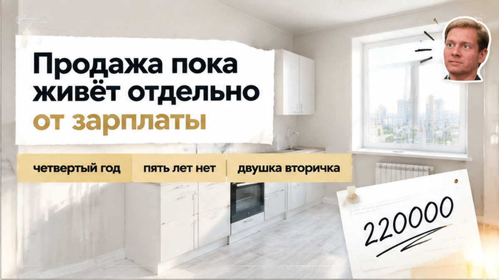
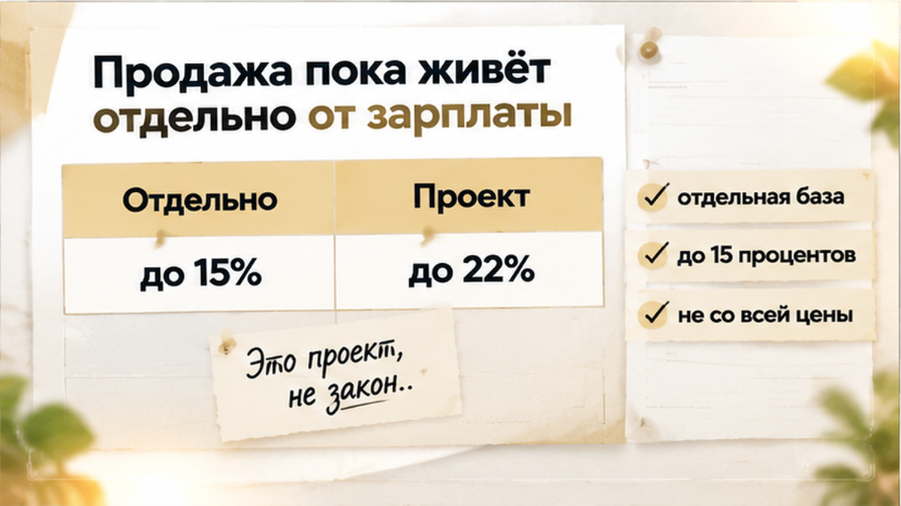
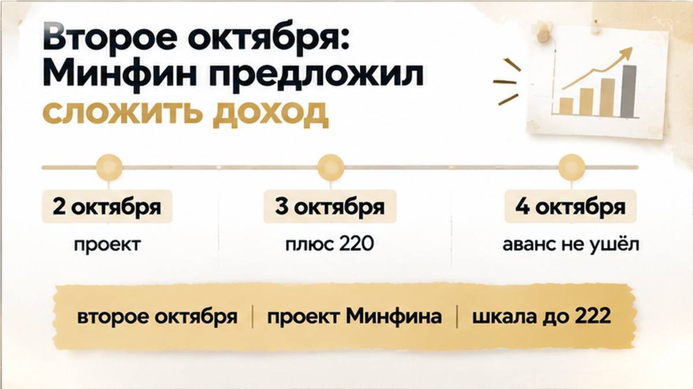
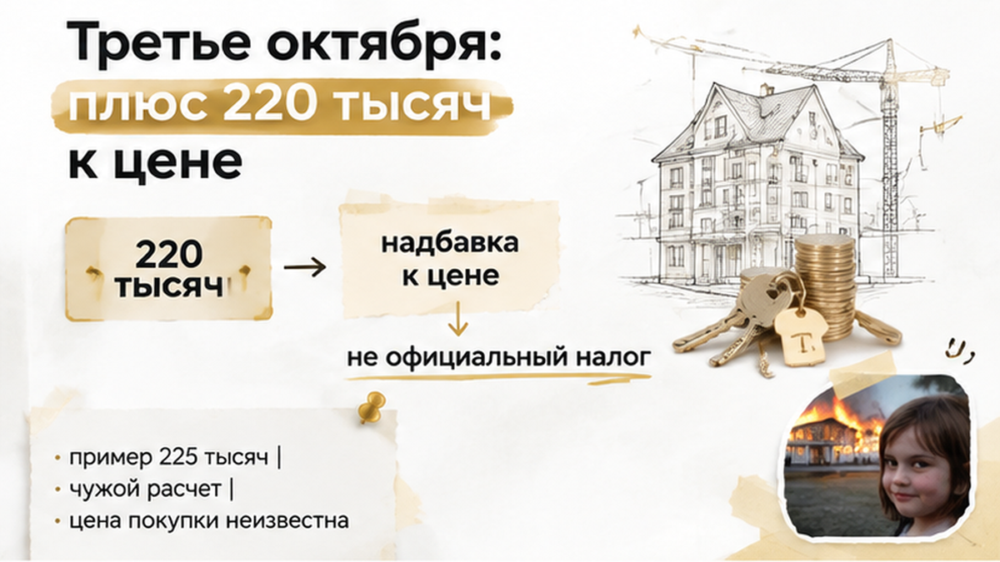

В Тюмени продавец двушки на вторичке 3 октября 2026 года, за день до аванса, накинул к уже согласованной цене 220 тысяч рублей «на налог» — и 4 октября покупатель деньги так и не перевёл. Эти 220 тысяч не официальный налог, а надбавка к цене, и из-за неё всё остановилось — аванса нет, договор не подписан, все сидят и смотрят друг на друга. Квартира у продавца в собственности четвёртый год, до пяти лет не дотянули, поэтому налог с продажи у него действительно может быть. А накануне, 2 октября, Коммерсантъ и РБК написали, что Минфин предложил с 2027 года складывать доход от продажи недвижимости с зарплатой. Это пока только проект, не закон, но продавец уже успел превратить заголовок в конкретную сумму в цене.
Я Святослав Шакин, The Риэлтор в Тюмени. Как поймать такую надбавку до того, как ушли деньги, рассказываю в Telegram и MAX.
Сама сделка самая обычная, таких у нас в Тюмени каждую неделю десятки. Двушку продаёт частный человек, покупает тоже частный человек, никаких посредников с деньгами посередине. Закрыться договорились в декабре 2026 года, а аванс поставили на 4 октября. Аванс, если по-простому, это первая сумма, которую покупатель вносит, чтобы квартиру сняли с продажи и держали под него. Цену к этому моменту уже согласовали, и, судя по всему, никто за столом не ждал, что она снова поедет.
Ключевая деталь во всей истории — срок владения. Продавец владеет квартирой четвёртый год. В законе есть минимальный срок владения: если квартира пробыла у тебя дольше него, налог с продажи вообще не платишь. Общее правило — пять лет. У нашего продавца пяти лет не набегает даже к декабрю, значит, налог при продаже возможен. И это не его фантазия и не страшилка из новостей, а нормальная арифметика конкретно его ситуации.
Я такие истории люблю разбирать именно на отрезке до аванса, потому что после первых денег разговаривать становится заметно тяжелее. До аванса обычно всплывает много всего: от того, есть ли согласие супруги до аванса, до мелких долгов по квартире. Налог продавца тоже из этого списка. Только налог — его, и если он хочет переложить его в цену, пусть объяснит, откуда взялась сумма.

Давайте сначала про то, как всё устроено сейчас, без всяких проектов. По Налоговому кодексу (статья 224, пункт 1.1, и статья 210, пункт 6) доход от продажи имущества лежит в отдельной базе. Я обычно объясняю на пальцах: у налоговой для него своя отдельная кучка, с зарплатой она не смешивается. С неё берут 13% с суммы до 2,4 млн рублей и 15% только с того, что сверху. Выше 15% по такой продаже ставка сейчас не поднимается, никаких 22% в действующих правилах нет.

Второй момент, про который часто забывают: налог считают не со всей цены. Если квартиру когда-то купили и срок владения ещё не вышел, облагается разница между ценой покупки и ценой продажи. Это статья 217.1 вместе с тем самым правилом про пять лет. За сколько наш продавец когда-то купил эту двушку, мы не знаем. Значит, честно посчитать его налог по одной цене продажи нельзя, и 220 тысяч пока ни на что не опираются.
За столом это выглядит так: продавец знает, что налог будет, и боится, что он вырастет. Это понятно, я его по-человечески не осуждаю. Но страх и расчёт — разные вещи. По сегодняшним правилам его налог зависит от разницы в ценах и ставки 13–15%, а не от зарплаты и не от новостей. С этого я и начинаю разговор о любой такой надбавке.
За день до надбавки, 2 октября 2026 года, Коммерсантъ и РБК написали про новый проект Минфина. Министерство предложило с 1 января 2027 года складывать доход от продажи недвижимости с зарплатой и считать налог по общей шкале. Если по-простому, деньги за квартиру и деньги с работы окажутся в одной куче. Чем больше куча, тем выше ставка на её верхнюю часть.
Шкала в проекте такая: до 2,4 млн рублей 13%, до 5 млн 15%, до 20 млн 18%, до 50 млн 20%, свыше 50 млн 22%. Сегодня у продажи потолок 15%, а в проекте верхняя ступень уже 22%. Разница заметная, поэтому новость так быстро и разлетелась по телефонам.

РБК привёл пример от компании Five Stones. Квартиру продают за 10 млн, у продавца зарплата 1,5 млн в год, и при сложении налог вырастает примерно на 225 тысяч. Это расчёт по условной квартире с условной зарплатой, а не по нашей тюменской двушке. Цифра очень похожа на 220 тысяч, и мне кажется, именно эта похожесть людей и сбивает.
Для меня главное слово во всей истории — «проект». Закона нет. Если его примут, то, судя по пересказу изданий, он заработает с 2027 года. А сделку собирались закрыть в декабре 2026-го, то есть деньги за квартиру продавец получил бы ещё в этом году, пока продажа живёт в своей отдельной базе. Я не утверждаю, что проект точно ничего не изменит. Я говорю о другом: 3 октября брать с покупателя деньги под закон, которого ещё нет, рановато.
Через день после новости продавец добавил к уже согласованной цене 220 000 рублей. Объяснил коротко: чтобы «закрыть налог». Давайте сразу назовём вещи своими именами. Это не налог и не платёж в бюджет, а надбавка к цене, которую продавец сам себе посчитал и предложил оплатить покупателю.
Откуда взялась именно эта сумма, по тому, что у нас есть, не видно. Мы не знаем, за сколько продавец когда-то купил эту двушку, а без цены покупки налог с продажи не посчитать. Если квартира куплена и пять лет не прошли, налог берут с разницы между покупкой и продажей. Маленькая разница даёт маленький налог. Если квартира досталась иначе, расчёт вообще другой. Поэтому 220 тысяч может оказаться и честной оценкой, и цифрой «на всякий случай», и почти дословным пересказом примера из новости.

Срок владения при этом никуда не делся: четвёртый год, до пяти лет не дотянули. Значит, какой-то налог при продаже в декабре возможен и по сегодняшним правилам, без всякого Минфина. Но это налог продавца, и сегодня он считается в отдельной базе с потолком 15%. Новость от 2 октября не делает его обязанностью покупателя.
Такие сдвиги цены перед авансом я вижу регулярно, и повод бывает разный: где-то внезапно всплывает коммуналка до аванса, где-то вот так налоговая новость. Паниковать тут не нужно, и записывать продавца в жулики с порога тоже. Нужно одно: спокойно понять, из чего сложена сумма, пока не переведено ни рубля.
Четвёртого октября покупатель должен был перевести аванс, первую часть денег, которая закрепляет договорённость и снимает квартиру с продажи. Перевод так и не случился. Покупатель увидел новую цену с 220 тысячами сверху «на налог» и решил подождать. Договор не подписан, аванса нет, сделка стоит на паузе. До декабря, когда её собирались закрыть, время ещё есть. Только теперь у продавца и покупателя в голове две разные цены.
По-моему, покупатель сделал правильно. От квартиры он не отказывался, он отказался платить за цифру, которую ему никто не объяснил. Проект Минфина пока остаётся проектом, и если его примут, считать по нему начнут с 1 января 2027 года. А сколько налога выходит у этого продавца, за столом никто так и не посчитал: цену, за которую он сам когда-то купил двушку, он не назвал. Без неё любая сумма «на налог» остаётся обычной прибавкой к цене, как её ни назови.
Мне правда интересно, как бы поступили вы, напишите в комментариях. Доплатить 220 тысяч продавцу до аванса или встать и уйти?
Когда цена вот так едет перед авансом, я не говорю продавцу «вы жадный», а покупателю «бегите». Я сажусь за стол и задаю три вопроса. Первый: сколько лет квартира у продавца на самом деле и когда выйдут пять лет. После пяти лет владения налога с продажи нет вообще, и новый проект это не отменяет. Второй: за сколько он её покупал. Налог берут с разницы между покупкой и продажей, а не со всей суммы. Третий: что именно лежит внутри 220 тысяч. Это может быть расчёт по сегодняшним правилам, страх перед проектом или просто желание взять побольше. И я всегда напоминаю, что сейчас доход от продажи считают отдельно от зарплаты, и ставка там не выше 15%, а не 22%, как пишут в заголовках.
Если продавец показывает расчёт и он сходится, договориться можно спокойно: поделить сумму, сдвинуть дату или оставить цену как есть. Если расчёта нет, а есть только «вдруг закон примут», это обычный торг, и покупатель имеет полное право торговаться в ответ. Точно так же, без нервов, я разбираю и другие вещи, которые всплывают перед деньгами: согласие супруги до аванса, коммуналка до аванса, родственники остановили продажу.
Я Святослав Шакин, The Риэлтор, работаю в Тюмени со вторичкой и сделки веду сам. В такой истории у меня одна задача: чтобы никто не перевёл и не взял деньги, пока цифра в цене не стала понятной обоим. Продавцу я помогаю честно посчитать его налог по сроку владения и цене покупки. Покупателю помогаю разобраться, за что именно его просят доплатить и есть ли у него основания сказать «нет».
Если цена поехала накануне аванса, лучше остановиться на день и спокойно её разобрать, чем потом спорить о деньгах, которые уже ушли. Паниковать тут не из-за чего. Пока аванс не переведён, у покупателя на руках все варианты: договориться, поторговаться или без обид выйти из сделки.